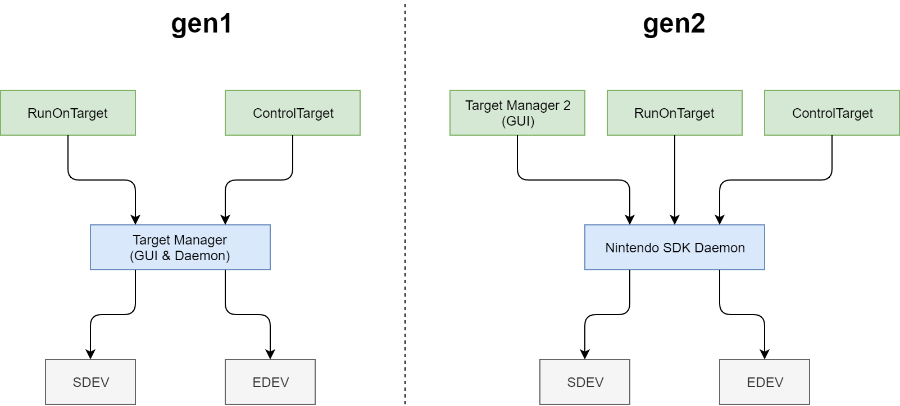

- Introduction
- Installation
- Update the Target (Development Hardware) Firmware
- Starting HtcGenerationManager
- Host PC Settings
- Target (Development Hardware) Settings
- Using Target Manager 2
- Additional Information
Introduction
Distribution of the Target Manager 2 pre-release version started with NintendoSDK 10.4.0.
Target Manager 2 is a tool that replaces the current Target Manager.
Target Manager 2 will be used by default in future NintendoSDK, but as of NintendoSDK 10.4.0, the current Target Manager is the default and it must be set to use Target Manager 2.
This page describes how to install the Target Manager 2 pre-release version.
Try Target Manager 2 early to help ensure a smooth transition.
Installation
Update the Target (Development Hardware) Firmware
To use Target Manager 2, you must update the firmware of the target (development hardware) to the version distributed with NintendoSDK 10.4.0 or later.
Use the initialization and update tool to update the firmware of all targets (development hardware) to be used. For more information about using the initialization and update tool, see Controlling the Development Hardware.
In addition, the target communication protocol (htc-gen1/htc-gen2) after initialization or update is automatically switched according to the host PC setting described later.
Starting HtcGenerationManager
Start the switching tool called HtcGenerationManager.
It exists in Tools/HtcTools/HtcGenerationManager/HtcGenerationManager.exe under the directory where NintendoSDK is installed.
Starting From NDI
HtcGenerationManager can also be started from NDI.
In Dev Environments, go to Switch to Target Manager 2 pre-release version and select Start the switching tool.
Host PC Settings
First, change the host PC settings with HtcGenerationManager.
Check the Enable option in Enable htc-gen2 pre-release version, and then click Apply.
Notes
This setting changes the Windows registry entry for HKEY_CURRENT_USER\Software\Nintendo\NintendoSdk\UserHtcGeneration.
Target (Development Hardware) Settings
Background
With the update to Target Manager 2, the communication protocol with the target (development hardware) has changed.
To use Target Manager 2, you must set the target (development hardware) and switch the communication protocol.
|
|
|
Target Manager | Target Manager 2 |
|---|---|---|---|
| Communication Protocol of Target | htc-gen1 | Able to connect | Unable to connect |
| htc-gen2 | Unable to connect |
Able to connect
|
Note: The protocol for the existing Target Manager is htc-gen1, and the protocol for Target Manager 2 is htc-gen2.
Procedure
In HtcGenerationManager > Target Settings, select the target and click the Switch to htc-gen2 button.
After the target restarts, it is configured to use the communication protocol for Target Manager 2 (htc-gen2).
Using Target Manager 2
You can use Target Manager 2 for the target (development hardware) that has been set.
For more information about using Target Manager 2, see Target Manager 2.
Additional Information
Configuring Using DevMenu
You can also set the target (development hardware) in DevMenu.
You can set the target communication protocol from DevMenu > Debug > Misc Settings > HTC Generation.
Stopping Using Target Manager 2
If you stop using Target Manager 2, you must return to settings using htc-gen1 for both the host PC and the target (development hardware).
Restoring Host PC Settings
Start HtcGenerationManager, select Enable htc-gen2 pre-releases version, > Disable, and click Apply.
Restoring Target (Development Hardware) Settings
In HtcGenerationManager > Target Settings, select the target and click Switch to htc-gen1.
Or, in DevMenu, select Debug > Misc Settings and set HTC Generation to gen1. To apply the change, you must restart the system.
Improvements and Changes From the Previous Target Manager
Target Manager 2 basically supports all features that were provided in Target Manager.
For more information about features not supported by Target Manager 2, see Differences From Target Manager.
In addition, the following improvements were made in Target Manager 2.
- Increased the communication speed.
- Improved SDEV host FS/htcs throughput by about 50%.
- Made it easier to use remote video.
- Multiple clients are now supported.
In the future, updates to Target Manager will end. Improvement requests will be responded to in Target Manager 2.
Also, another major change is that some functions have been moved to a new program called Nintendo SDK Daemon. This change is described later.
Nintendo SDK Daemon
The functions that Target Manager used to handle have been divided into the following two programs.
| Program Name | Description |
|---|---|
| Nintendo SDK Daemon | A program that runs in the background when the host PC and target (development hardware) communicate. |
| Target Manager 2 | A program that provides a GUI for managing the target (development hardware). |
The Nintendo SDK Daemon must be running in the background for Target Manager 2 to work.
If htc-gen2 is enabled in the host PC settings, Nintendo SDK Daemon is also required for ControlTarget and RunOnTarget to work.
Note that when you start these programs, Nintendo SDK Daemon is started automatically.

CONFIDENTIAL